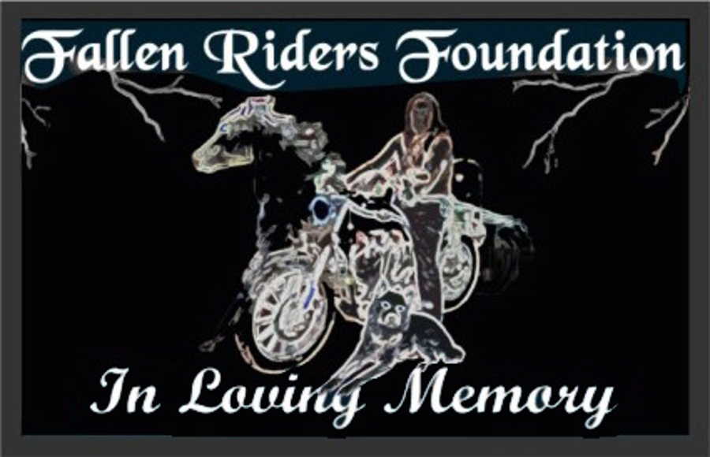

lf you ride a motorcycle, then you are a brother or sister in the wind and that makes you a member. We receive no payment or salary from the foundation for what we do. Any and all funds we have are for the help of the fallen and their families. The Foundation is totally dependent upon donations from individuals for what it does. We don't have government grants or big corporate sponsors behind us. We are people who ride, who saw a real need in our rather extended family of the wind, and did what it takes to take action about the situation.
Donations are gratefully accepted through Amazon Smile where Amazon donates 0.5% of the price of eligible AmazonSmile purchases. Log into your Amazon account at smile.amazon.com and choose Fallen Riders Foundation as your Charity.
Donations are also accepted through PayPal! We are funded 100% by Public Donations.
We are currently looking for people to act as our contact representatives in their part of their state. Each state has it’s own laws peculiar to it. So in order to accomplish our mission, we need help in each state. We are now actively working towards building support infrastructure for riders across the nation. In order to do that, we need people. Good people. People who know what it is that motorcyclists face in their lives when they get injured on the road. Or what the family faces when a family member is killed on the road. If you’re interested, get in touch with us.
Contact Us!Visit us at our fund raising events, and learn all you can about us. Then tell your fellow riders about us and what you learned. Educate your fellow riders on document information we provide Rights of Succession, Health Care POA, Power of Attorney, Living Will, and Final Will.
Print and give out our Rider Information Card to anyone you see on a bike.
Time is of the essence in the event any of these documents are needed!
Be Safe! Be Prepared! Ride Free!